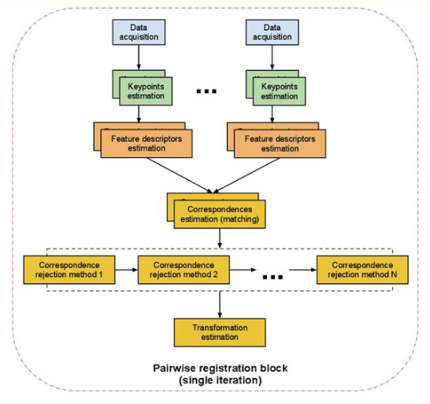
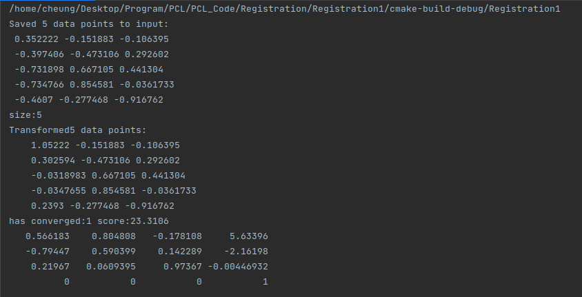

在逆向工程，计算机视觉，文物数字化等领域中，由于点云的不完整，旋转错位，平移错位等，使得要得到完整的点云就要对局部点云进行配准，为了得到被测物体的完整数据模型，需要确定一个合适的坐标性，将从各个视角得到的点集合并到统一的坐标系下形成一个完整的点云，然后就可以方便进行可视化的操作，这就是点云数据的配准。点云的配准有手动配准依赖、依赖仪器的配准和自动配准，点云的自动配准技术是通过一定的算法或者统计学规律利用计算机计算两块点云之间错位，从而达到两块点云自动配准的效果，其实质就是把不同的坐标系中测得的数据点进行坐标系的变换，以得到整体的数据模型，问题的关键是如何让得到坐标变换的参数R（旋转矩阵）和T（平移向量），使得两视角下测得的三位数据经坐标变换后的距离最小。目前配准算法按照过程可以分为整体配准和局部配准。PCL中有单独的配准模块，是掀了配准相关的基础数据结构，和经典的配准算法如ICP。
PCL中实现的配准算法以及相关的概念：
两两配准的简介：
一对点云数据集的配准问题是两两配准，通常通过应用一个估计得到的平移和旋转的4*4刚体变换矩阵来使得一个点云的数据集和另一个点云数据集（目标数据集）进行完美的配准。
具体的实现步骤如下：
（1）首先从两个数据集中按照同样的关键点选取的标准来提取关键点
（2）对选择所有的关键点分别计算其特征描述子
（3）结合特征描述子在两个数据集中的坐标位置，以两者之间的特征和位置的相似度为基础，来估算他们的对应关系，初步的估计对应点对。
（4）假设数据包含噪声点，应该去除对配准有影响的对应点对
（5）利用剩余的正确的对应关系来估算刚体变换，完成配准。
对应估计(correspondences estimation)：
假设我们已经得到扫描的点云数据获得的两组特征向量，在此基础上，我们必须找到相似特征，再确定数据的重叠部分，然后才能进行配准。根据特征的类型，PCL使用不同的方法来搜索特征之间的对应关系。
使用点匹配时，使用点的XYZ的坐标作为特征值，针对有序点云和无序点云数据的不同处理策略：
（1）穷举配准(brute force matching)
（2）kdTree-最近邻查询(FLANN)
（3）在有序点云数据的图像空间中查找
（4）在无序点云数据的索引空间中查找
对应关系的去除(correspondence rejection)
由于噪声的影响，通常并不是所有估计的对应关系都是正确的，由于错误的对应关系对于最终的刚体变换矩阵的估算会产生负面影响，所以必须去除它们，可以采用随机采样一致性估计，或者其他方法剔除错误的对应关系，最终使用对应关系数据只使用一定比例的对应关系，这样既能提高变换矩阵的估计精度也能提高配准点的速度。
变换矩阵的估计（transformation estimation）
估算对应矩阵的步骤如下：
（1）在对应关系的基础上评估一些错误的度量标准
（2）在摄像机位姿（运动估计）和最小化错误度量标准下估算一个刚体变换
（3）优化点的结构
（4）使用刚体变换将源点云旋转/平移与目标所在的同一个坐标系下，用所有点，点的一个子集或者关键点运算一个内部的ICP循环。
（5）进行迭代，直到符合收敛性判断标准为止
迭代最近点算法(Iterative Closest Point ICP)
ICP算法对待拼接的两片点云，首先根据一定的准则确立对应点集P和Q，其中对应点对的个数，然后通过最小乘法迭代计算最优的坐标变换，即旋转矩阵R和平移矢量t，使得误差函数最小，ICP处理流程分为四个主要步骤：
（1）对原始点云数据进行采样
（2）确定初始对应点集
（3）去除错误对应点对
（4）坐标变换的求解

如何使用迭代最近点算法：在代码中使用ICP迭代最近点算法，程序随机生成一个点云作为源点云，并将其沿x轴平移后作为目标点云，然后利用ICP估计源到目标的刚体变换矩阵，对中间所有信息都打印出来。
1 | #include <iostream> |
